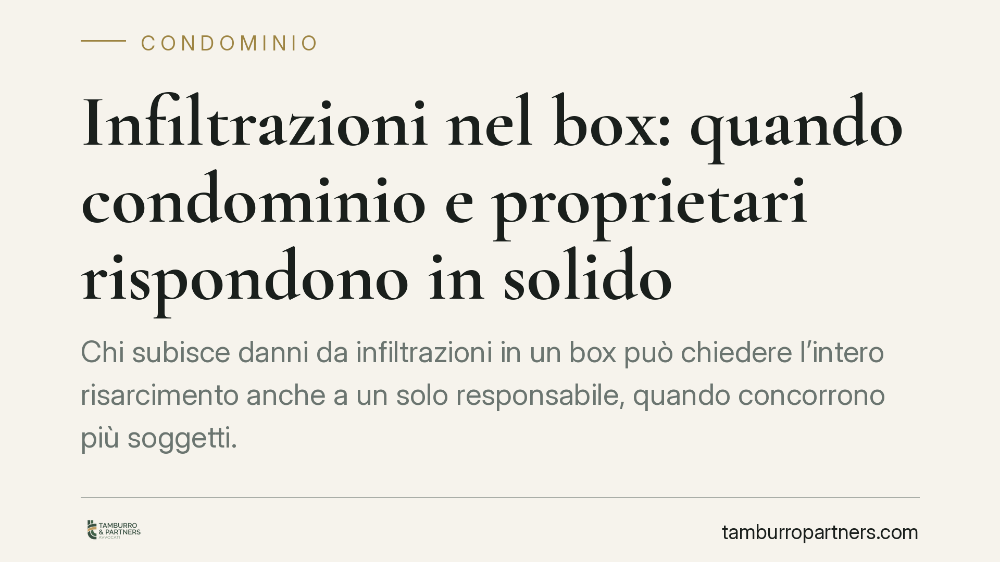

Infiltrazioni nel box: quando condominio e proprietari rispondono in solido
Chi subisce danni da infiltrazioni in un box può chiedere l'intero risarcimento anche a un solo responsabile, quando concorrono più soggetti. La Cassazione ribadisce l'applicazione della responsabilità solidale prevista dall'art. 2055 del Codice civile ai rapporti tra condominio e singoli proprietari. Una regola che incide sia sulla strategia del danneggiato sia sull'azione di regresso tra condebitori.

Il caso
Un imprenditore lamentava danni al proprio box provocati da infiltrazioni riconducibili sia a parti comuni dell'edificio sia a porzioni di proprietà esclusiva di altri condòmini. La questione centrale: può il danneggiato pretendere l'intero risarcimento da uno solo dei responsabili, oppure deve frazionare la richiesta in base alle quote di colpa?
La Corte di Cassazione ha confermato l'orientamento consolidato: quando più soggetti concorrono a produrre lo stesso danno, opera la responsabilità solidale. Il danneggiato può quindi rivolgersi a un solo condebitore per ottenere il ristoro integrale.
Inquadramento normativo
Il box, di regola, è un bene in proprietà esclusiva o una pertinenza dell'unità immobiliare. Ciò non esclude, però, che le infiltrazioni derivino da parti comuni (solette, muri perimetrali, impianti condominiali) o da unità di altri proprietari. Da qui la possibile pluralità di responsabili.
In questa materia concorrono spesso due titoli distinti. Il primo è l'art. 2051 c.c., che disciplina la responsabilità da cosa in custodia: il condominio risponde dei danni provocati dalle parti comuni salvo prova del caso fortuito. Il secondo è l'art. 2055 c.c., che regola la solidarietà quando il danno è imputabile a più persone.
L'art. 2055 c.c. si articola su due piani. Il primo comma stabilisce che, se il fatto dannoso è addebitabile a più soggetti, tutti sono obbligati in solido al risarcimento: il danneggiato può esigere l'intero da uno qualsiasi di essi. Il secondo comma disciplina il rapporto interno tra i responsabili: chi ha pagato può agire in regresso verso gli altri, per ottenere la parte di loro spettanza. In mancanza di prova diversa, il terzo comma presume che le colpe siano di pari grado e i danni di uguale entità.
Implicazioni pratiche
Per il danneggiato. È la posizione più favorevole. Non deve ricostruire preventivamente le quote di responsabilità né citare in giudizio tutti i possibili obbligati. Può concentrare la domanda sul condebitore più solvibile o più facilmente aggredibile, ottenendo l'intero risarcimento e lasciando a quest'ultimo l'onere di rivalersi sugli altri.
Per il condominio. Se convenuto da solo, può essere condannato a pagare l'intero danno, anche quando la causa delle infiltrazioni è in parte riconducibile a una proprietà esclusiva. Solo in un secondo momento potrà recuperare, in via di regresso, la quota altrui.
Per i singoli proprietari. Vale lo stesso rischio speculare: chi possiede l'unità da cui origina l'infiltrazione può trovarsi a rispondere per intero, salvo poi agire verso il condominio o gli altri condòmini corresponsabili.
L'onere della prova nel regresso
Il punto delicato si sposta sul rapporto interno. Chi ha pagato e intende recuperare parte dell'esborso deve dimostrare l'effettiva ripartizione delle responsabilità. In assenza di prova, la presunzione di uguaglianza delle colpe divide l'obbligazione in parti uguali tra i condebitori.
È quindi decisivo documentare con precisione l'origine tecnica del danno. Una perizia che individui con chiarezza la fonte delle infiltrazioni e il contributo causale di ciascun soggetto può modificare in modo sostanziale il riparto interno, evitando di sopportare una quota superiore a quella dovuta.
Cosa fare in concreto
- Documenta subito il danno. Fotografa lo stato dei luoghi, annota date e ricorrenza delle infiltrazioni, conserva ogni comunicazione con l'amministratore e gli altri condòmini.
- Richiedi un accertamento tecnico. Individua l'origine precisa delle infiltrazioni: parte comune, impianto condominiale o proprietà esclusiva. È l'elemento su cui si gioca sia l'azione risarcitoria sia il regresso.
- Formalizza la richiesta per iscritto. Invia una diffida con raccomandata o PEC ai soggetti coinvolti, interrompendo la prescrizione e fissando i termini della pretesa.
- Valuta la posizione assicurativa. Verifica polizze condominiali e individuali che coprano danni da acqua, e attiva tempestivamente le denunce di sinistro.
- Imposta correttamente la prova fin dall'inizio. La corretta ricostruzione tecnica e documentale delle cause è determinante sia per chi chiede il risarcimento sia per chi, avendo pagato, intende esercitare il regresso.
Nota sulla giurisprudenza citata
L'indirizzo qui richiamato riflette l'orientamento consolidato della Corte di Cassazione in materia di responsabilità solidale da infiltrazioni. Per l'applicazione al caso concreto si raccomanda la verifica della pronuncia più recente e pertinente, insieme all'analisi della specifica situazione condominiale.
---
Contributo informativo a cura di Tamburro & Partners Avvocati - Avv. Giuseppe Tamburro. Non costituisce parere legale.
Ogni condominio ha una storia a sé.
Se gestisci un'amministrazione e vuoi un confronto su una specifica questione condominiale, scrivi allo studio. Ti rispondiamo entro un giorno lavorativo.